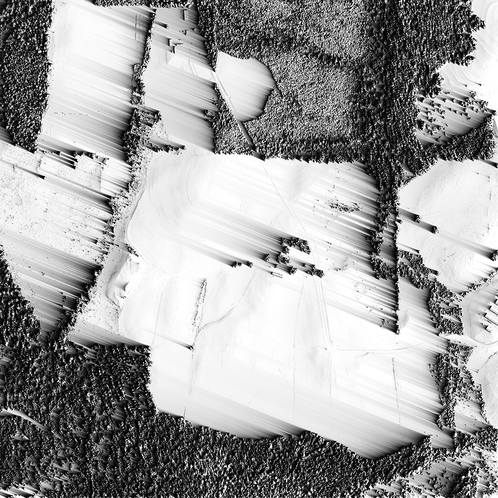

- UAV case study: SUSI 62
- Midpines UAV Flight
- Agisoft Photoscan Modeling
- Open Drone Map UAV Analytics
- Agisoft, Pix4D, and Trimble UAV Analytics
- Lidar Analytics
- UAV Timeseries Analytics
- Simple Lidar- UAV Fusion
- Smooth Lidar-UAV Fusion
- 3D Printing
- Landscape Evolution
- Rough Draft: Landscape Evolution Article
